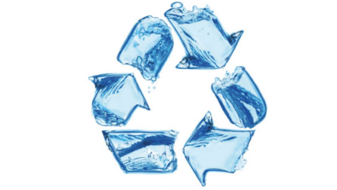

Mokepon
This is a longer card with supporting text below as a natural lead-in to additional content. This content is a little bit longer.

Portfolio personal
Con este proyecto aprobe el curso de #SeProgramar.

Card title
Proyecto creado con el fin de presentar en el curso de HSA, de potreros Digital, tambien me sirvio para presentar como trabajo final en el curso de programacion web.